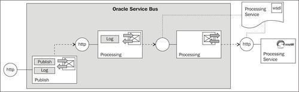
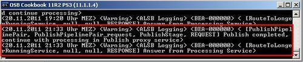

In this recipe, we will use the Publish action to asynchronously invoke a service from the proxy service message flow, without having to wait for the calling service to finish its processing.
For this recipe, we have an external Processing Service, available as a soapUI mock service which takes quite some time to do its processing. The interface in the Processing Service WSDL is defined synchronous. We have a business service Processing which allows us to invoke the external service from a proxy service.
Instead of directly invoking the business service from the Publish proxy service, an additional proxy service Processing is added, which only exposes a one-way interface. By doing that, the Publish proxy service can use a Publish action to invoke the Processing proxy service without having to wait for external service to complete.

You can import the OSB project containing the base setup for this recipe, with the Processing Service business and proxy service already implemented into Eclipse OEPE from \chapter-9\getting-ready\using-publish.
Start the soapUI mock service simulating the Processing Service by double-clicking on start-ProcessingService.cmd in the \chapter-9\getting-ready\misc folder.
Let's implement the Publish proxy service, which will use the Publish action to invoke the Processing proxy service. In Eclipse OEPE, perform the following steps:
proxy folder and name it Publish. PublishPipelinePair. PublishStage. proxy folder and click OK.'Publish completed, continue with processing in Publish proxy service' into the Expression field.Now, let's test OSB project by performing the following steps in the Service Bus console:
proxy folder inside the using-publish-to-async-invoke-service project.
We have used the Publish action in this recipe to asynchronously invoke a service, the Processing proxy service, with a one-way service interface. The Processing proxy service wraps some processing which takes longer to complete. Actually the external service, mocked by soapUI will use the ID passed (which is hardcoded in the Replace action of the Processing proxy service to the value of 10) to the Processing Service as the time in seconds to wait until the response is sent back. Therefore, the Processing proxy service will only show its Log output after a bit more than 10 seconds. However, because the Publish proxy service uses the Publish action to invoke the Processing proxy service, he/she does not have to wait and the Publish action finishes immediately. The processing of the Processing proxy service is done in a separate thread and is completely independent from the invoking service. The Log action in the Publish proxy service executes immediately and is therefore shown first in the Service Bus console log window.